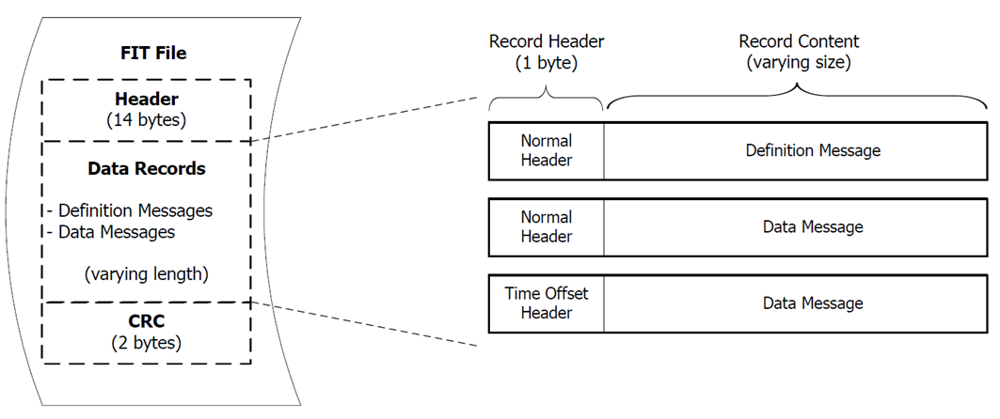

The Flexible and Interoperable Data Transfer (FIT) protocol is specifically tought to store and share data produced by sport, fitness and health devices. It is designed to be compact, interoperable and extensible.
The format consists of a header, a variable number of records and a final control code:

The header is composed as follows:
| Byte | Parameter | Description | Size (Bytes) |
|---|---|---|---|
| 0 | Header Size | Indicates the length of this file header including header size. | 1 |
| 1 | Protocol Version | Protocol version number. | 1 |
| 2 | Profile Version LSB | Profile version number. Little endian. | 2 |
| 3 | Profile Version MSB | ||
| 4 | Data Size LSB | Length of the Data Records section in bytes. Does not include Header or CRC. Little endian. | 4 |
| 5 | Data Size | ||
| 6 | Data Size | ||
| 7 | Data Size MSB | ||
| 8 | Data Type Byte[0] | ASCII values for “.FIT”. A FIT binary file opened with a text editor will contain a readable “.FIT” in the first line. | 4 |
| 9 | Data Type Byte[1] | ||
| 10 | Data Type Byte[2] | ||
| 11 | Data Type Byte[3] | ||
| 12 | CRC LSB | Contains the value of the CRC of Bytes 0 through 11. Little endian. | 2 |
| 13 | CRC MSB |
The function for calculating the CRC is provided in the attached project and has the following structure:
void FitCRC_Get16(uint16_t& crc, uint8_t byte);
This function must be used with a CRC initially equal to 0, which is then updated at each call based on the provided byte.
To avoid including the thousands of fields supported by the format in each file, the records contain two types of message: definition message and data message.
The definition message takes a global identifier (Global Message Number) and links it to a local identifier (Local Message Type). Each data message contains only the values and a local message type that identifies the definition message that defines it.
Each record has a one-byte header in which the 4 most significant bits are 0 in the case of a data message and 4 in the case of a definition message. The 4 least significant bits are the local message type of the message.
For what concerns definition messages, the content of the record is as follows:
| Byte | Description | Length | Value |
|---|---|---|---|
| 0 | Reserved | 1 Byte | 0 |
| 1 | Architecture | 1 Byte | Architecture Type 0: Definition and Data Messages are Little Endian 1: Definition and Data Message are Big Endian |
| 2-3 | Global Message Number | 2 Bytes | 0:65535 – Unique to each message *Endianness of this 2 Byte value is defined in the Architecture byte |
| 4 | NumFields | 1 Byte | Number of fields in the Data Message |
| 5 – 4 + NumFields * 3 | Field Definition | 3 Bytes (per Field) | Field Definition: (number, size, base type) |
In this exercise all data will be in little endian only. In practice, 16 different local message types (0-15) are possible in each file. For each type you will receive only one definition message and then many data messages. Each definition message contains a reference to a global message number reported in the standard. For example, the global message number 21 corresponds to the event message, which describes an event, such as pressing the start or stop button on the racing watch. The definition message associates the global message (e.g. 21) with a local 4-bit number (e.g. number 2). Data messages with local message type equal to 2 will contain event data.
The definition also indicates how many and which of the possible fields of the global message are actually used in data messages of that type. For example, the following record:
42 00 00 15 00 05 FD 04 86 03 04 86 00 01 00 01 01 00 04 01 02
is a definition (it starts with the 4 most significant bits that are 4) for the local message type 2 (following 4 bits). Then follows a 00 (reserved), the architecture is 00 (little endian), the global message number is 15 00 (or 0x0015, that is 21) and messages of this type will contain 05 fields in the following order:
FD (253) size: 04 (4) base type: 8603 (3) size: 04 (4) base type: 8600 (0) size: 01 (1) base type: 0001 (1) size: 01 (1) base type: 0004 (4) size: 01 (1) base type: 02It is possible to know the size of a type 2 data message simply by adding the size of the fields and considering a byte for the header (which should be 02). To understand the meaning of the fields, it would be necessary to refer to the standard (this will not be required in this exercise). The data types of each field (base type) are also encoded in the standard, but will not be used for this exercise.
Write a command line program that accepts the following options:
fitdump <input file .FIT>
The program must handle the command line and:
Header CRC oktime_created = 854803893avg_speed = 7.614 km/hFile CRC okAn empty project (with the only function for calculating the CRC) and a dump.txt file that lists in textual format the contents of the example.fit file are provided in the material for the test. The overall output for this file should be:
Header CRC oktime_created = 854803893avg_speed = 7.614 km/havg_speed = 7.488 km/havg_speed = 9.165 km/hFile CRC ok